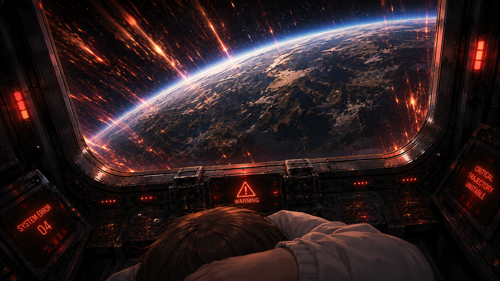
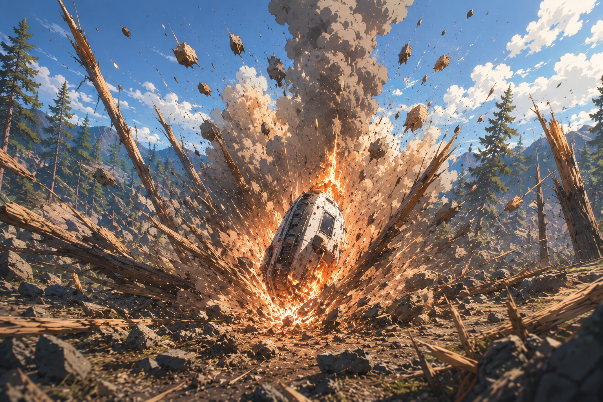
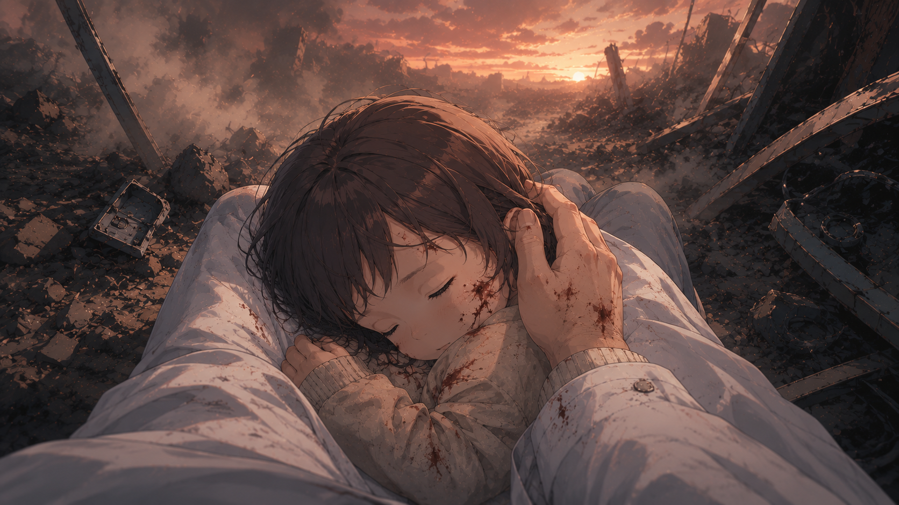
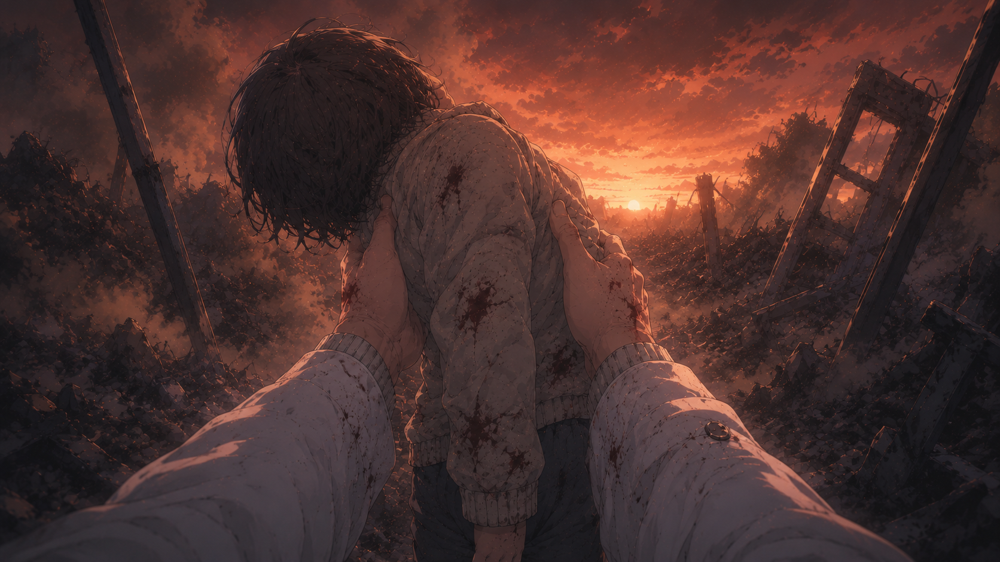
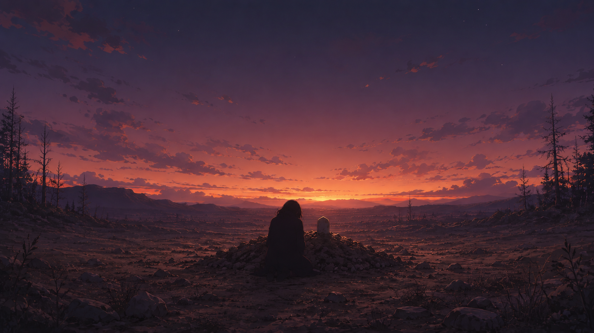
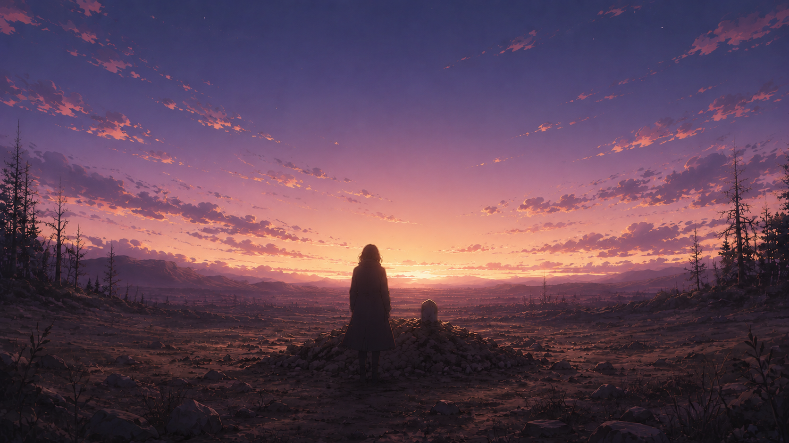
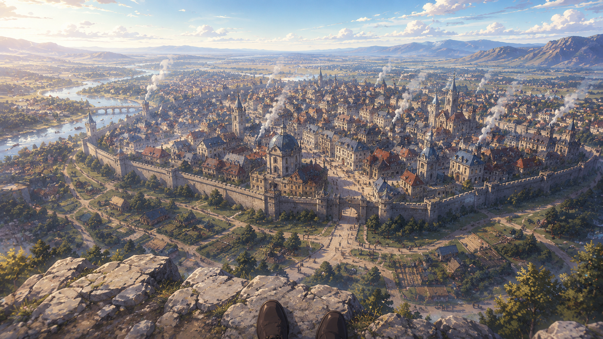

아스텔
EP. 07
1인용 탈출선에 안전장치도 없이 단 아이를,
당신은 그저 꼭 끌어안았다

젠장..1인용인데..젠장!!!
여기, 꽉 잡아야 해!!
콰아아아앙!!!!

아스텔 · 두 번째 지구
"으응...여긴...아가..? 아가!"

당신의 물음에도
아이는 그저 축 늘어져있었다

"아야...어째서...왜..."


당신은 정처없이 걸었고
마침내 새로운 행성의 마을을 발견했다

"이곳에서는, 반복하지 않겠다"
아스텔: 두 번째 지구
지구는 이미 멸망했다.
그러나 이 별에서는, 다르게.
← 이전 화
8화 준비 중